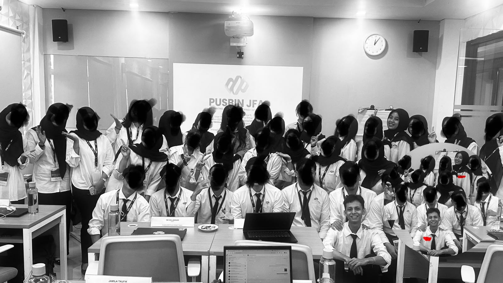

Hari itu pertama kalinya kita dipertemukan. Satu ruangan kelas dan satu bangku meja saat diklat di Bogor. Ceritanya aku datang lebih dulu dan nempatin bangku yang udah ditentukan panitia. Di meja sampingku tertulis sebuah nama "Afriza Dini Andalin." nama yang indah namun aku tidak tahu siapa pemilik nama itu.
Tidak lama kemudian, seorang wanita datang menyapaku, "Pagi bang." Dengan suara tegas dan lembut, senyum yang manis dan tatapan mata yang indah seakan-akan memaksa mulutku untuk tersenyum lebar menyambut sapaan itu. Yupp ternyata itu kamu sang pemilik nama indah. First impression lihat kamu hatiku ngebatin, "wihhh, cantik juga nih orang," hehe dasar aku.
Di awal pertemuan itu, kita mulai saling lempar pertanyaan. Aku ingat banget saat kamu tanya bulan dan tahun kelahiranku, yang ternyata umur kita cuma selisih satu bulan! Kamu juga sempat menanyakan tinggiku karena merasa aku tinggi banget wkwk.
Lalu ada satu momen kecil yang ga pernah aku lupain, yaitu saat kamu menyentuh lengan kiriku dengan jarimu. Momen sesederhana itu membuatku merasa kita mendadak dekat, padahal baru kenal beberapa jam bahkan hitungan menit. Ditambah lagi saat ngobrol, kita kadang saling mendekatkan muka berbisik. Duh, aku pangling banget liat mata indah dan senyummu sedekat itu.
Mungkin ini titik awal aku mulai tertarik sama kamu. Ketertarikan itu langsung aku buktiin waktu kamu terlambat masuk kelas setelah istirahat karena ketiduran, lalu aku modus dengan memberikan perhatian kecil mengingatkanmu agar segera masuk kelas lewat pesan WhatsApp singkat "udah mulai mbak." Aku yakin banget, kalau saat itu aku ga tertarik sama kamu, aku bakal bodo amat. jahat banget yaa wkwkwk
Namun sayangnya... di sepanjang diklat aku cuma menikmati perasaan tertarik itu tanpa melakukan tindakan yang lebih jauh ataupun mencari perhatiannya kamu. kamu tau? hal yang benar-benar bisa aku nikmatin itu cuma mandangin kamu pas kamu sedang presentasi. Aku juga seneng banget sama momen kita dipertemukan lagi di satu kelompok yang sama setelah kita pisah bangku di hari-hari selanjutnya, apalagi duduk kita persis sampingan kemarin. Walaupun saat itu kita fokus ke kelompok dan ga banyak ngobrol tapi aku selalu menikmati setiap momen kedekatan kita kemarin. Selanjutnya yang aku inget adalah momen sapa menyapa, gatau kenapa pas kamu yang nyapa tuh, rasanya beda banget kek ada rasa bahagia-bahagianya wkwk.
